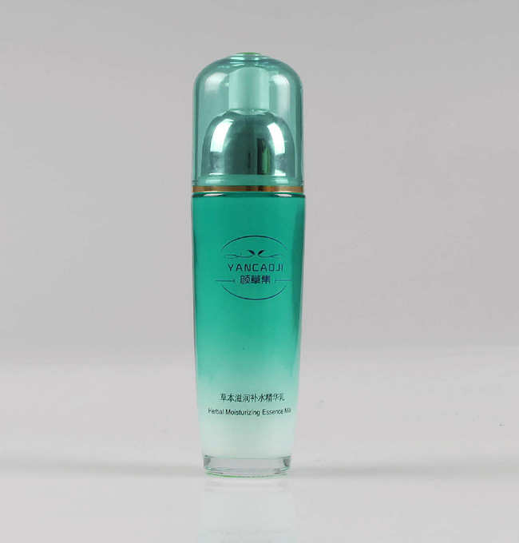
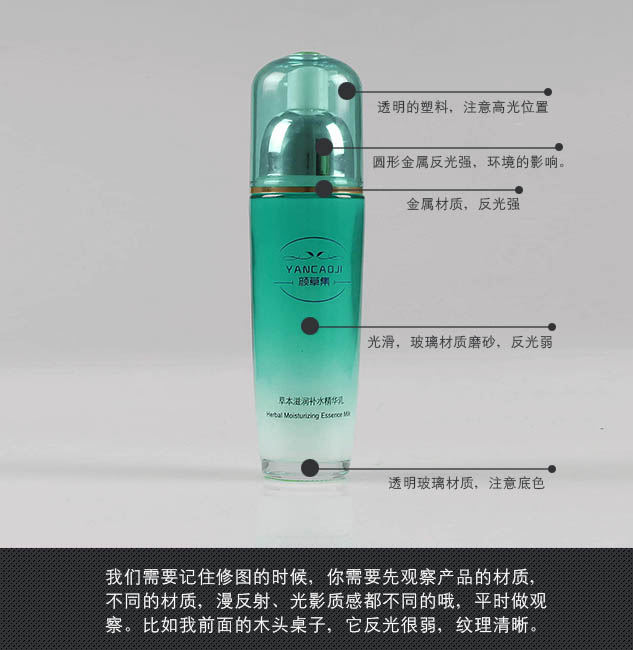
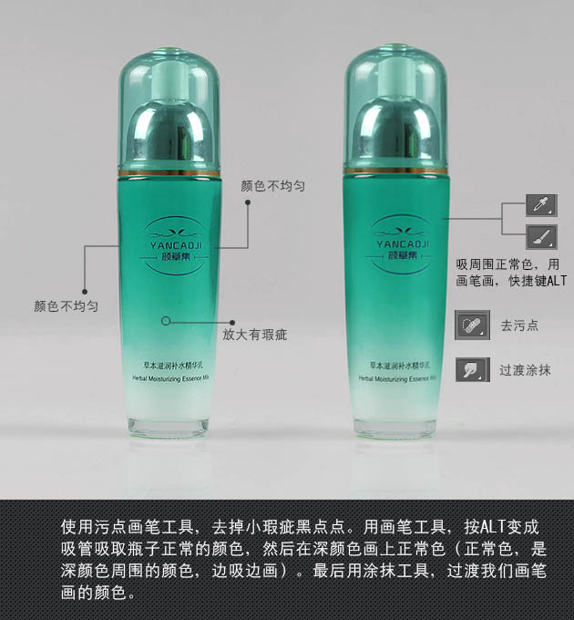
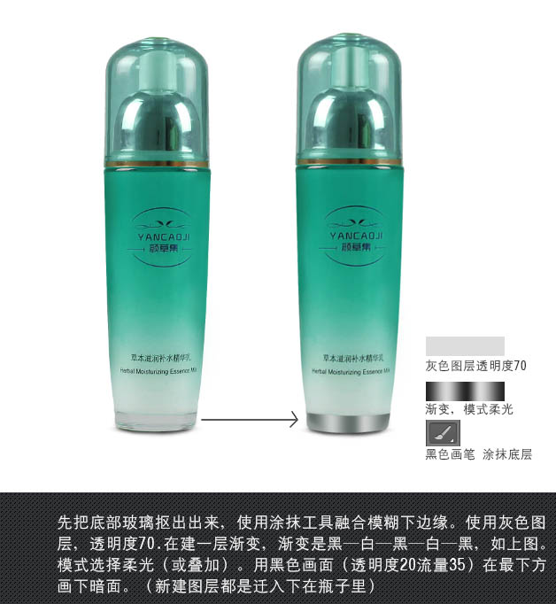
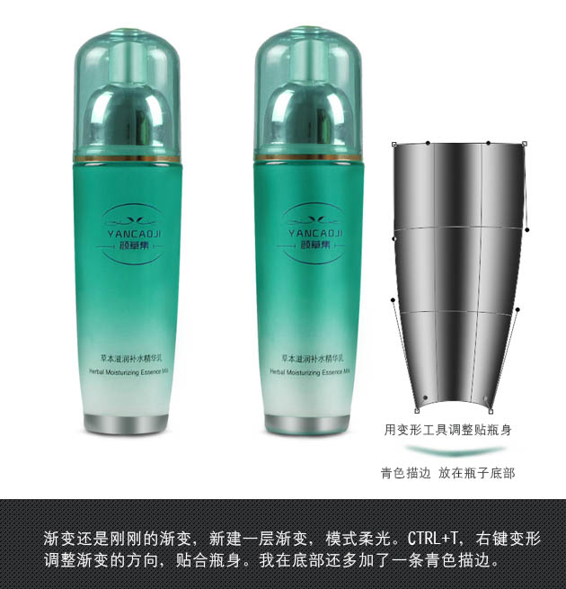
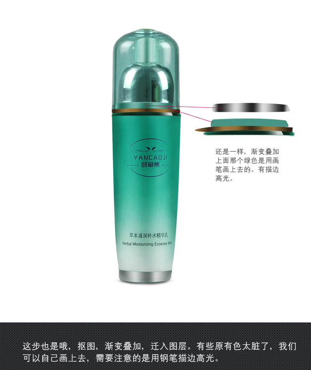
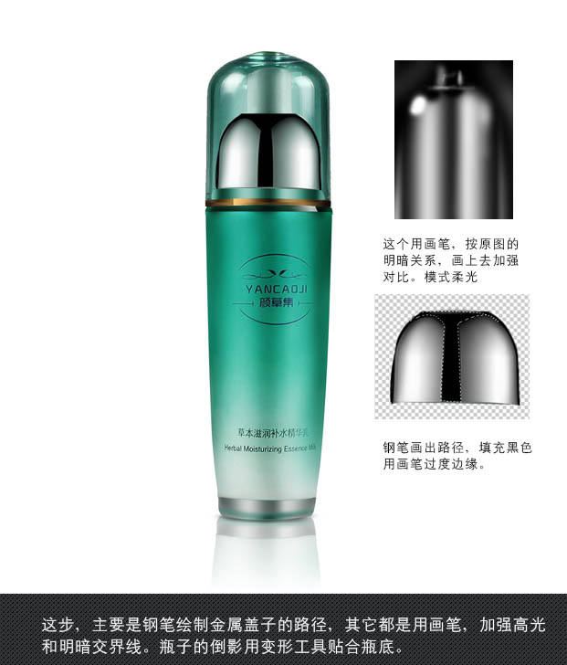

作者修图的思路非常好，过程：拿到产品图片后先不要急于处理，先分析构成，并找出缺点；然后由底部开始修复，不同的材质需要用不同的高光来渲染。 |
 |
最终效果 |
|

1、我们需要记住修图的时候，你需要先观察产品的材质，不同的材质，漫反射、光影质感都不同的，平时做观察。比如我前面的木头桌子，它反光很弱，纹理清晰。 |
 |
2、使用污点画笔工具，去掉小瑕疵黑点点。用画笔工具，按Alt变成吸管吸取瓶子正常的颜色，然后在深颜色画上正常色。最后用涂抹工具，过渡我们画笔画的颜色。 |
 |
3、先把底部玻璃抠出来，使用涂抹工具融合模糊下边缘。使用灰色图层，透明度70%，在建一层渐变。渐变是黑-白-黑-白-黑，如下图。模式选择“柔光”或“叠加”。用黑色画笔透明度20%，流量35%，在最下方画下暗面。 |
 |
4、渐变还是刚刚的渐变，新建一层渐变，模式“柔光”。Ctrl + T ，右键变形调整渐变的方向。贴合瓶身。我在底部还多加了一条青色描边。 |
 |
5、这步也是，抠图，渐变叠加。有些原有色太脏了，我们可以自己画上去，需要注意的是用钢笔描边高光。 |
 |
6、这步主要是钢笔绘制金属盖子的路径。其它都是用画笔，加强高光和明暗交界线。瓶子的倒影用变形工具贴合瓶底。 |
 |
最后在网上找了一个花的素材做底纹，背景颜色使用瓶身的颜色，这样看起来比较统一。 |
|